Librairie · Gembloux · depuis 1985
Une librairie qui conseille, au pied du beffroi.
Romans, BD, jeunesse, livres de poche et livres scolaires sur trois niveaux, en plein centre de Gembloux. Le livre n'est pas en rayon ? On le commande pour vous.
Du mardi au samedi · 10 h – 18 h
- Commande et retrait en librairie
- Des conseils de lecture
La librairie
On y entre pour un livre, on repart avec un conseil
L'Apostrophe vend des livres à Gembloux depuis 1985. Au numéro 5 de la Grand'Rue, à deux pas du beffroi, les rayons montent sur trois niveaux : romans et poches en bas, la jeunesse au premier, les arts de la table, la nature et les voyages au deuxième. Si le titre que vous cherchez n'y est pas, la librairie le commande, et l'on peut même commander par téléphone avant de passer.
« Très bel accueil par une dame qui vous sourit dès votre entrée au magasin. On peut échanger des opinions et choisir des livres à l'aise. »Alain C., avis Google
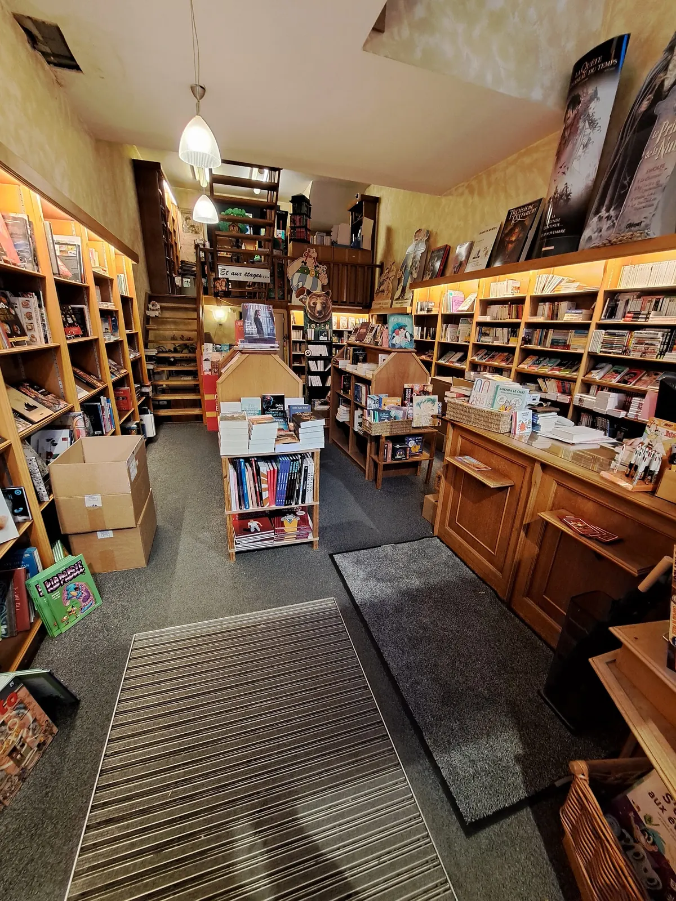
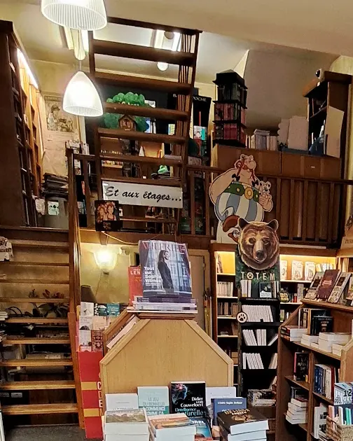
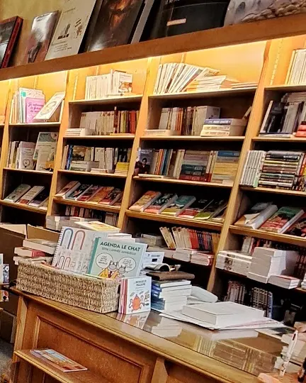
Les rayons
Du livre de poche au guide de voyage, étage par étage
C'est écrit à la main sur la vitrine, à côté de la porte. Nous l'avons simplement recopié ici, pour savoir où monter avant d'entrer.
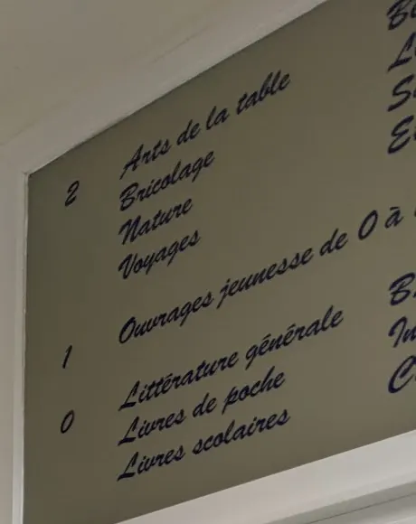
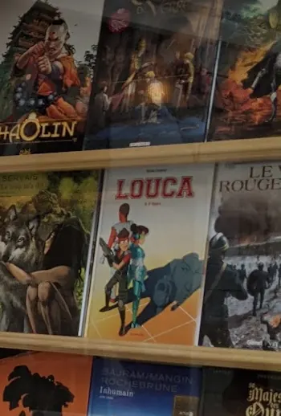
L’Apostrophe
Pour la maison et le grand air
- Arts de la table
- Bricolage
- Nature
- Voyages
Pour les plus jeunes
- Ouvrages jeunesse, dès 0 an
En entrant
- Littérature générale
- Livres de poche
- Livres scolaires
En vitrine
Le temps d'un coup d'œil en passant
Ce jour-là : Musso, Foenkinos, Signol, Patterson, des albums de BD et un lapin bleu en cape. L'enseigne bleue, elle, ne bouge pas.
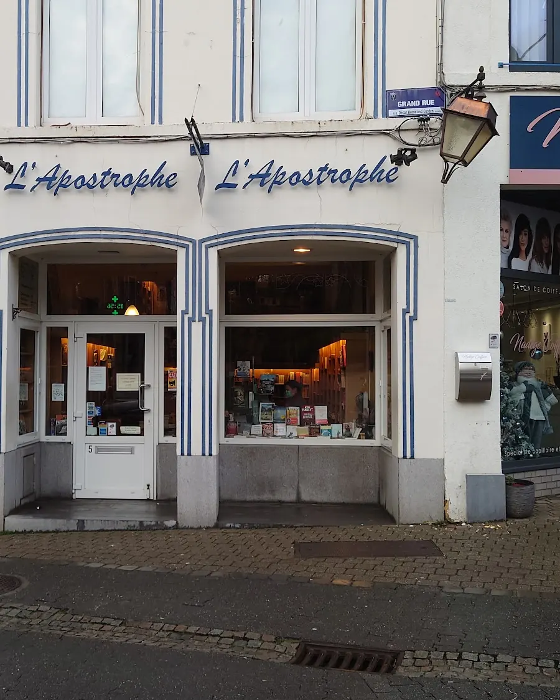
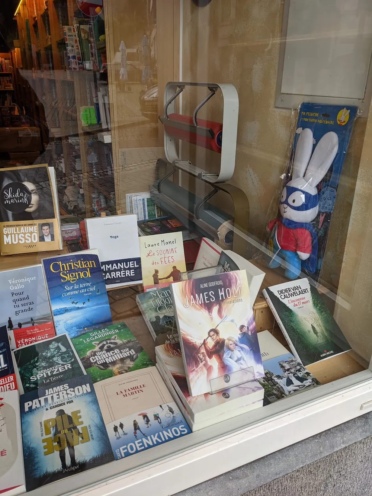
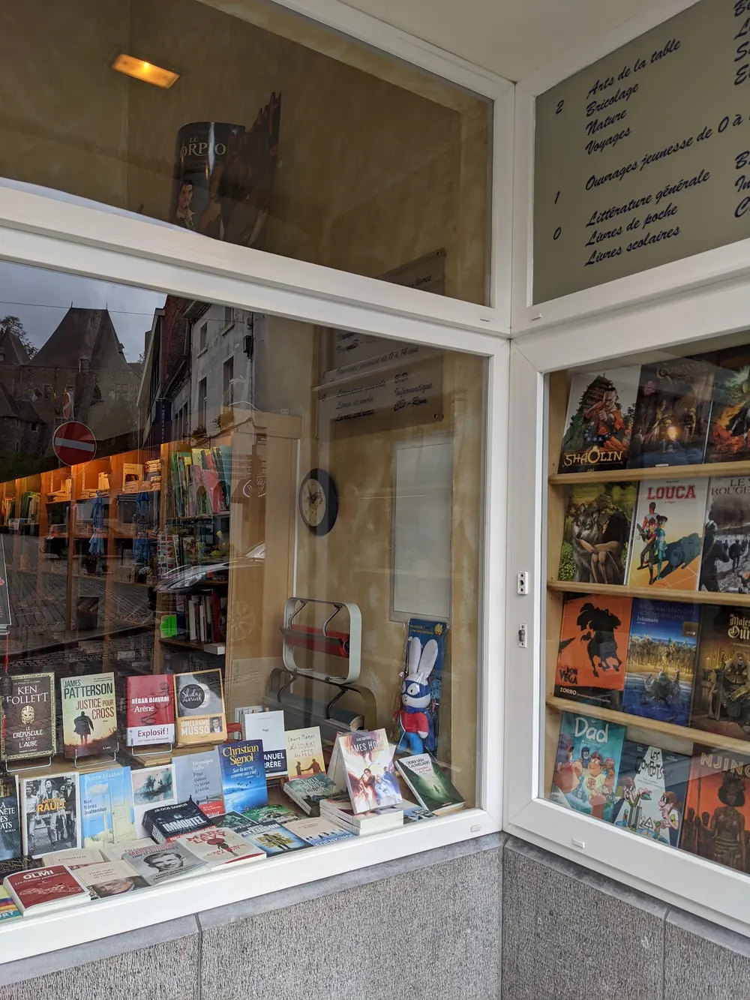
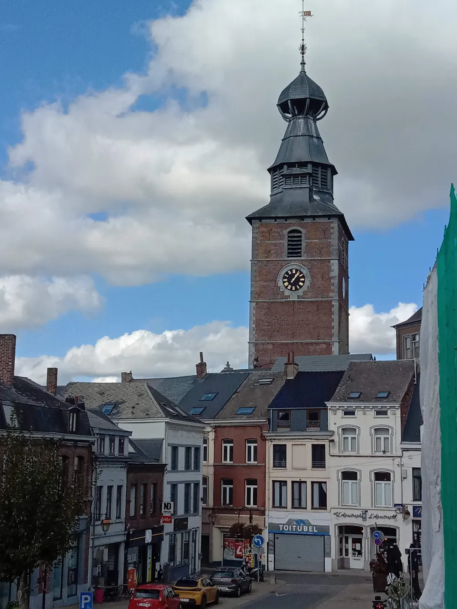
Faites glisser pour voir la vitrine
Commander
Un livre à commander ? Il vous attend à la librairie
« Si le livre n'est pas disponible, on peut le commander sans problème »
, écrit Clémence M. Dites ce que vous cherchez et le jour où vous passez : le reste se fait au comptoir.
Avis
« Un must à Gembloux ! »
Ce que les lecteurs écrivent sur Google après être passés à L'Apostrophe.
Horaires et accès
Ouvert du mardi au samedi, au cœur de Gembloux
| lundi | fermé |
|---|---|
| mardi | 10 h – 13 h 30 · 14 h – 18 h |
| mercredi | 10 h – 13 h 30 · 14 h – 18 h |
| jeudi | 10 h – 13 h 30 · 14 h – 18 h |
| vendredi | 10 h – 13 h 30 · 14 h – 18 h |
| samedi | 10 h – 13 h 30 · 14 h – 18 h |
| dimanche | fermé |
Petite pause de midi, de 13 h 30 à 14 h.
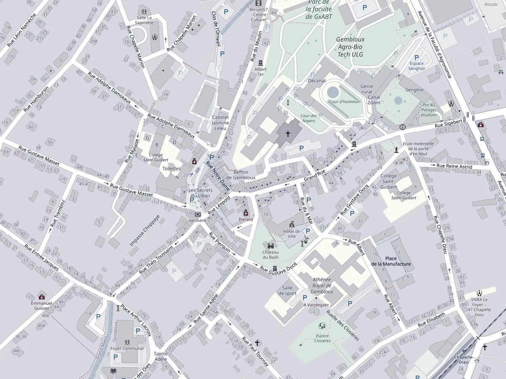
Itinéraire © OpenStreetMap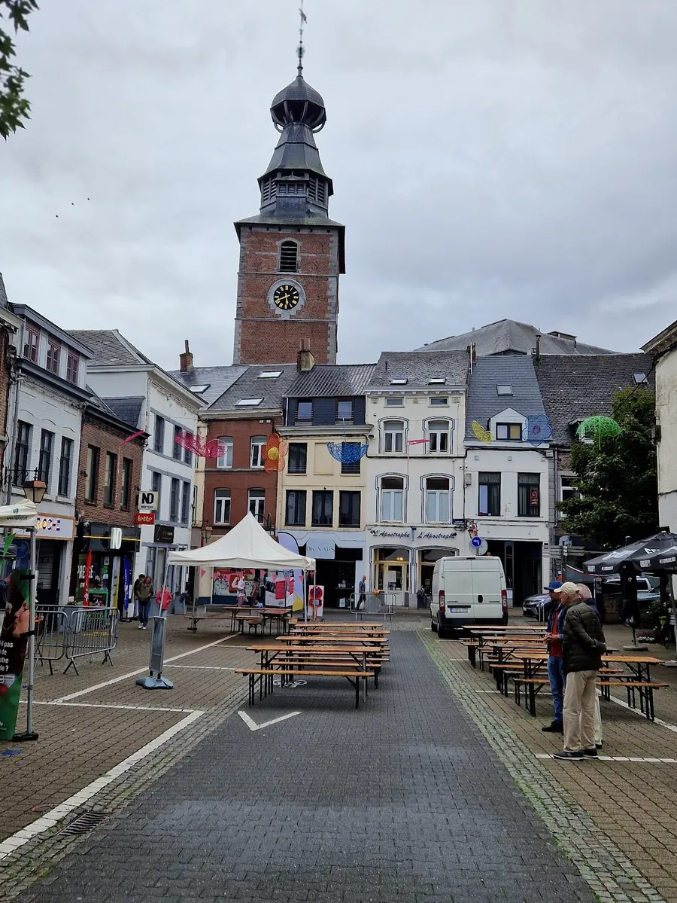
Le repère : le beffroi
Remontez la Grand'Rue vers le beffroi : l'enseigne bleue en lettres attachées est au numéro 5, en plein centre.